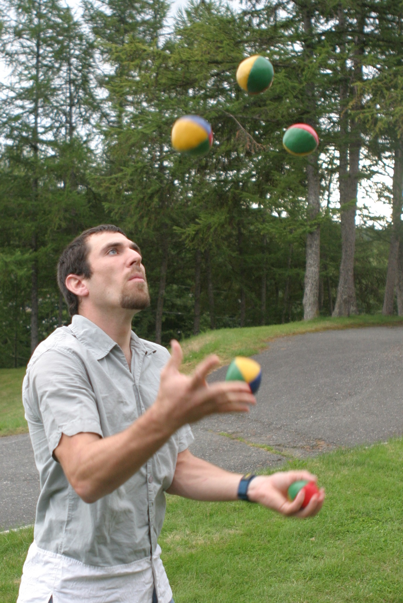
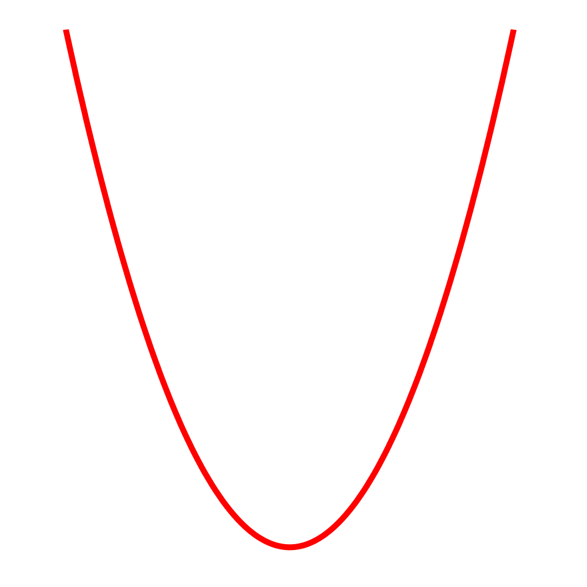
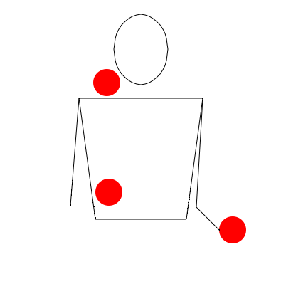

Have you ever thought of juggling before? Did you ever see someone else juggle and think "Wow, I wish I could do that too!". Well you came to the right place! In this how-to site, you can learn how to get started. After you've mastered the
basics, you can learn some advanced stuff as well and amaze your friends and family!.
If you're still not convinced to as why you should learn to juggle, then you should listen to these health benefits. According to an Oxford study, an experiment was conducted to see if there were changes in white matter after juggling everyday
for six weeks. The results proved to be true as the experimental group had an increase in white matter. "'[These] changes were in regions of the brain which are involved in reaching and grasping in the periphery of vision'" says Jan Scholz,
a student at the Oxford Centre for Functional Magnetic Resonance Imaging of the Brain. Other benefits include:
better reflexes
improves hand-eye coordination
relieves stress
exercises the mind
So what are you waiting for? Be like this guy and start juggling!

First, you need a ball or any object that can fit in your hand like a beanbag. With the object on your dominant hand, toss upwards in a motion that makes an upsidedown parabola in the air, and catch with the other hand (see image below). This
might take several tries so keep on practicing! Once you're comfortable with that, do the same with the other hand.

Once you've mastered tossing and catching with one ball, you can move onto using two balls. The biggest difference here is the timing. With one ball on each hand, toss the first as usual. Then, right when the ball reaches it's peak, toss the
other ball the same way. Also try not to collide the balls together, so shift your tossing. Remember to keep on practicing and don't give up!
Juggling three is very similar to juggling two. Of course, you'll have to hold two balls in one hand and one in the other and time your tosses. The first toss depends on where you're holding the two balls. So, using the hand with the two balls,
toss only one ball. When the first ball reaches it's peak, toss the ball on your other and catch the first one with the same hand. When the second ball reaches it's peak, toss the third ball (the one that hasn't been tossed
yet) and catch the second with the same hand. Finally, catch the third ball with the opposite hand. If all of that seemed too complicated, here's a visual to help you.

Congratulations, you now know how to juggle! Keep on practicing and maybe even learn some advanced tricks like juggling four balls or using rings to juggle.